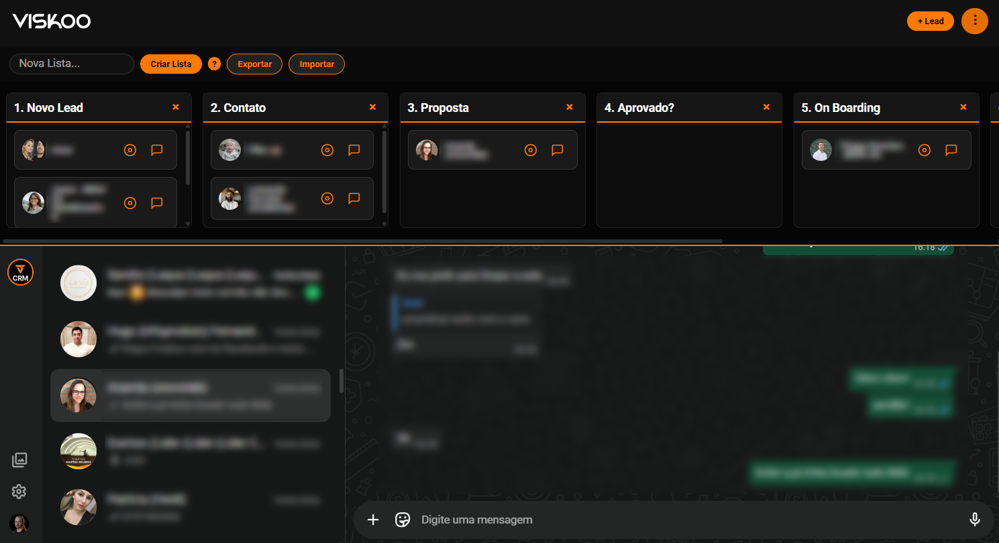

Passo 1
Crie sua lista e as etapas do seu funil de vendas.
O Viskoo CRM reúne funil de vendas e atendimento no mesmo lugar. Arraste o lead entre etapas, veja o histórico da conversa e acompanhe cada negociação do primeiro contato até o fechamento.
Quem vende sabe: o lead chega, a conversa começa no WhatsApp, some numa planilha e ninguém mais sabe em que etapa ela está.
O resultado é um funil sem visibilidade:
Um funil visual e um chat integrado para nunca mais perder um lead de vista.
Solução
Cadastre o lead, acompanhe a etapa no Kanban e converse direto pelo WhatsApp integrado, sem trocar de ferramenta.
Organize leads em colunas como Novo Lead, Contato, Proposta, Aprovado e On Boarding, e arraste entre etapas.
Crie, renomeie ou remova colunas do funil para refletir o processo comercial da sua empresa.
Abra o chat do lead direto no CRM e acompanhe toda a conversa sem precisar abrir outro aplicativo.
Adicione um novo lead em segundos com o botão "+ Lead" e já direcione para a etapa certa do funil.
Crie listas separadas para diferentes campanhas, origens ou equipes de vendas.
Traga leads de planilhas existentes ou exporte sua base para usar em outras ferramentas.
Registre observações e histórico de cada negociação junto ao card do lead no funil.
Veja todos os atendimentos em andamento em uma lista única, com status e última mensagem.
O Viskoo CRM foi pensado para negócios que fecham venda majoritariamente pelo WhatsApp e precisam de organização sem perder agilidade.
Acompanhe propostas em andamento com clientes e prospects em um funil único.
Distribua leads entre vendedores e acompanhe o andamento de cada negociação.
Organize contatos, propostas e follow-ups sem depender de planilhas soltas.
Centralize o atendimento de vendas via WhatsApp com visão clara do funil.
Acompanhe o cliente aprovado até a entrega, sem perder informação na transição.
Que precisam de um CRM simples, visual e rápido de colocar em uso.
Não é sobre burocratizar a venda. É sobre dar visibilidade ao funil sem tirar a agilidade da conversa.
Cadastre, converse e acompanhe. O Viskoo CRM organiza o processo sem complicar a rotina.
Crie sua lista e as etapas do seu funil de vendas.
Cadastre o lead com o botão "+ Lead" ou importe uma planilha.
Converse com o lead direto pelo WhatsApp integrado ao card.
Arraste o card entre as etapas conforme a negociação avança.
Registre notas e acompanhe o histórico de cada lead.
Feche a venda e siga o cliente até o On Boarding, tudo no mesmo funil.
Acompanhe cada lead em colunas do jeito que faz sentido para o seu processo.
Converse com o lead sem sair do CRM, com histórico salvo no próprio card.
Separe leads por campanha, origem ou time comercial.
Traga e leve seus dados sem ficar preso à ferramenta.
Adicione um novo lead em poucos cliques a qualquer momento.
Veja todas as conversas em andamento organizadas em uma única lista.
Adicione ou remova colunas do funil conforme sua operação evolui.
Visual escuro, direto ao ponto, sem excesso de cliques para operar.
Funil Kanban na parte superior e conversas integradas logo abaixo, tudo na mesma tela.

O Viskoo CRM nasce para resolver um problema comum em negócios que vendem pelo WhatsApp: perder visibilidade do funil no meio da conversa.
Em vez de alternar entre WhatsApp, planilha e memória, o CRM centraliza funil e atendimento em uma única tela.
A validação vem da própria operação comercial da Viskoo, que usa o CRM no dia a dia.
Fale com a Viskoo e entenda como o CRM pode se encaixar no seu processo comercial.
Quero o Viskoo CRMFale com a equipe Viskoo para conhecer planos e condições.